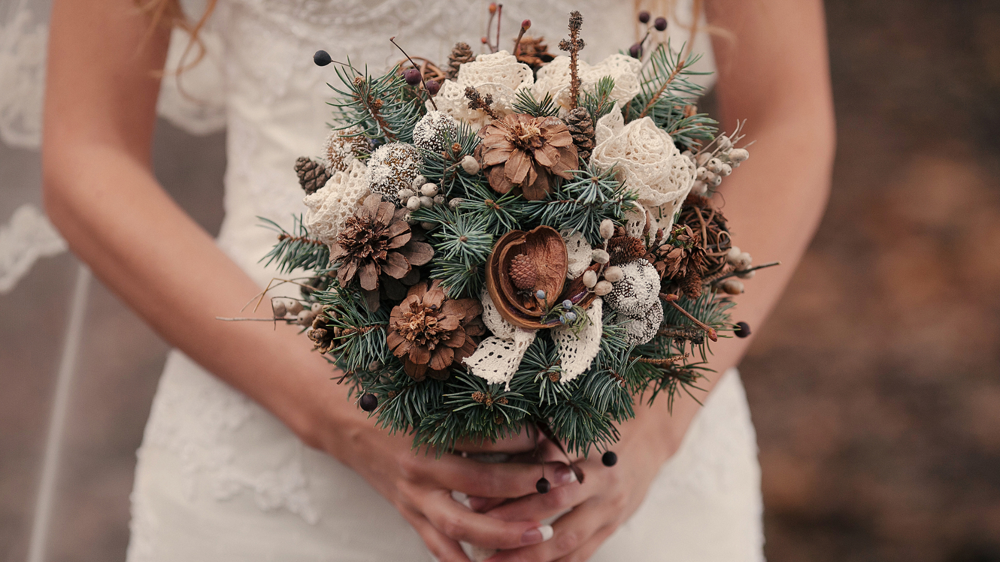
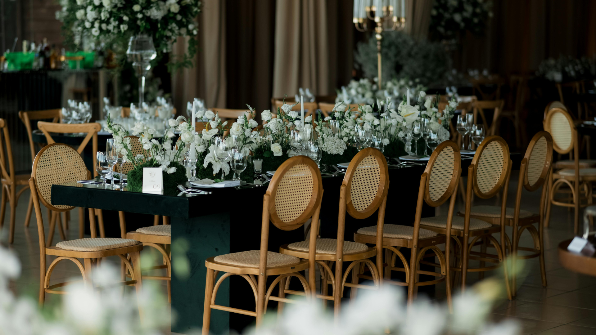

Is it too early to be thinking about winter weddings and Christmas weddings? Probably. Am I going to talk about them anyway? Absolutely.
Winter weddings can be brilliant. They can feel cosy, atmospheric, personal and a little bit magical without needing to look like someone has tipped a Christmas decoration box over the whole venue. Unless that is your dream, in which case: go for it, I respect the commitment.
If you are planning a winter wedding in Norfolk or Suffolk, the main thing is to work with the season rather than pretending it is July. The light is different, the timings are different, and the best bits are often indoors: candles, speeches, laughter, warm rooms, fairy lights, coats, mulled drinks and people huddled together in the best possible way.
Make the most of the winter light
Winter light can be beautiful, but it does not hang around politely waiting for everyone to finish canapés.
Because the sun sets earlier, it helps to think about the timing of your ceremony, portraits and group photographs. You do not need to plan the whole day around photos, but a little awareness makes a big difference. Even ten or fifteen minutes of soft winter light can give you gorgeous, natural portraits without dragging you away from your guests for ages.
And if the weather is doing classic British weather things, that is fine too. Umbrellas, coats, doorways, covered walkways and quick outdoor moments can all work. Some of my favourite photographs come from people embracing the weather rather than fighting it.
Choose a venue with strong indoor spaces
For a winter wedding, your indoor spaces matter more than ever. You want somewhere that still feels special if you spend most of the day inside.
Look for:
- good natural light during the day
- warm, characterful rooms for drinks and speeches
- space for guests to move comfortably
- somewhere you would still love if it rained
- lighting that feels cosy rather than clinical
Winter weddings can be wonderfully relaxed when the venue does not rely entirely on perfect outdoor weather.

Use winter styling without overdoing it
There is a lot to love about winter styling: candles, foliage, pine cones, velvet, rich colours, white flowers, fairy lights and a bit of sparkle. The trick is choosing details that feel like you, not like the Christmas aisle has taken over your wedding breakfast.
Evergreen foliage, warm candlelight and textured flowers photograph beautifully. They also work really well on film because they add movement, depth and atmosphere to the room.
Think about how the day will sound, not just how it will look
This is where winter weddings can be especially lovely on film.
Photographs are brilliant for holding onto the look of the day: the flowers, outfits, venue, people and all the tiny moments. Film adds something else: voices, laughter, music, vows, speeches, footsteps, the room reacting, and all those little sounds that bring the day back.
At a winter wedding, when everyone is gathered inside and the atmosphere feels close and warm, those sounds can become a huge part of the memory.
Norfolk and Suffolk winter wedding venues to explore
There are lots of brilliant venues across Norfolk and Suffolk, but for winter weddings I would pay particular attention to places with strong indoor spaces, character and atmosphere.
Holkham Hall is a grand Norfolk option with licensed spaces including the Marble Hall, the Saloon, the Statue Gallery, the Temple and the Lady Elizabeth Wing. It is the kind of venue where winter styling, candlelight and dramatic interiors can really come into their own.
Pentney Abbey gives you historic Norfolk character, with a 12th-century setting and a barn used for wedding breakfasts and evening parties. It is a good example of a venue where indoor atmosphere and outdoor moments can work together.
Redhouse Wedding Barn in Suffolk is especially interesting for Christmas weddings because it describes itself as an 18th-century oak-framed barn surrounded by acres of Christmas tree fields. That is almost rude-level convenient for festive wedding photographs.
Lanwades Hall in Suffolk leans beautifully into the cosy winter feeling, with roaring log fires, original oak panelling and high ceilings. Very useful if your dream wedding atmosphere is less “summer marquee” and more “warm, elegant, please pass the fizz”.
Manor Mews is a Norfolk barn venue with countryside surroundings, a ceremony and reception space, and guest cottages. For winter weddings, having accommodation close by can be a real bonus, especially when nobody wants to do a long dark drive home in formal shoes.
Do not be afraid of the early sunset
An early sunset is not a problem; it just needs planning for.
If you want outdoor portraits, we can build those into the right part of the day. If you are more interested in the atmosphere of the ceremony, speeches, evening and dance floor, winter gives us loads to work with indoors.
Candlelight, fairy lights and darker evenings can make photographs and films feel warm and cinematic. The word “cinematic” gets thrown around a lot, but winter genuinely does help. It is doing half the mood-setting for us.
How I approach winter weddings
My approach is the same whatever the season: relaxed, calm and focused on the real story of your day.
For winter weddings, that means paying attention to light, timing and comfort. I will help you make the most of good light when it appears, but I will not make you stand outside freezing for ages just because “the content needs it”. Nobody wants blue hands in their wedding photos unless that was a very specific creative choice.
If I am photographing your wedding, I am looking for natural moments, people, details and the feel of the day. If I am filming your wedding, I am focused on the voices, movement, speeches, music and atmosphere that make the film feel alive.
I offer photography or videography for each wedding, rather than doing both myself on the same day, so I can give that service my full attention. If you are looking for both, I can recommend other brilliant photographers or videographers who may be a good fit.
Winter weddings are not just summer weddings with colder fingers. They have their own atmosphere, timing and charm.
Planning a winter or Christmas wedding?
If you are planning a winter wedding in Norfolk or Suffolk, or you are thinking about a Christmas wedding and wondering how it might look on camera, I would love to hear what you are planning.
Tell me your date if you have one, your venue or rough plans, and whether you are looking for photography or videography. If the date is free in my calendar, I am always happy to chat.
Tell Ben about your winter wedding